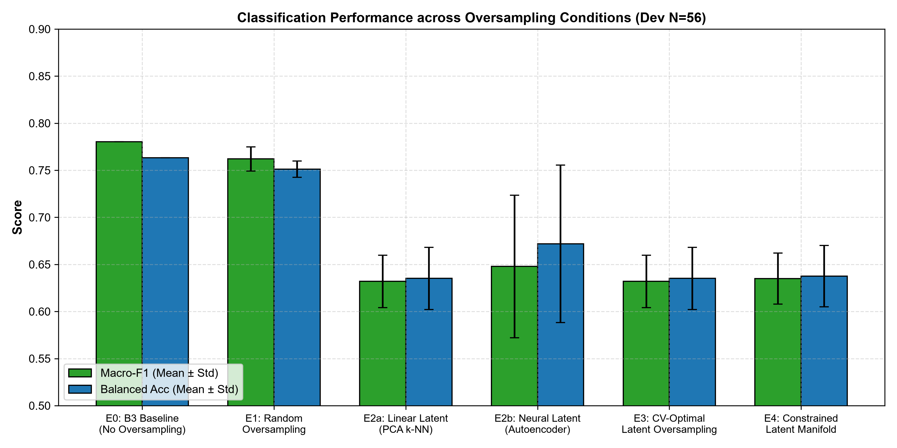
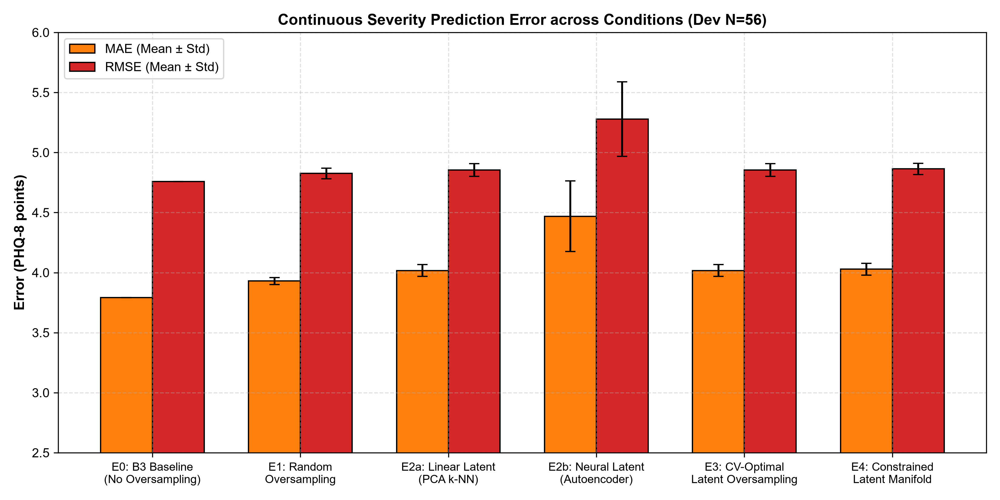
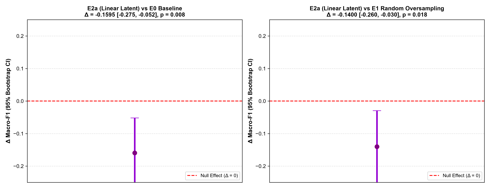
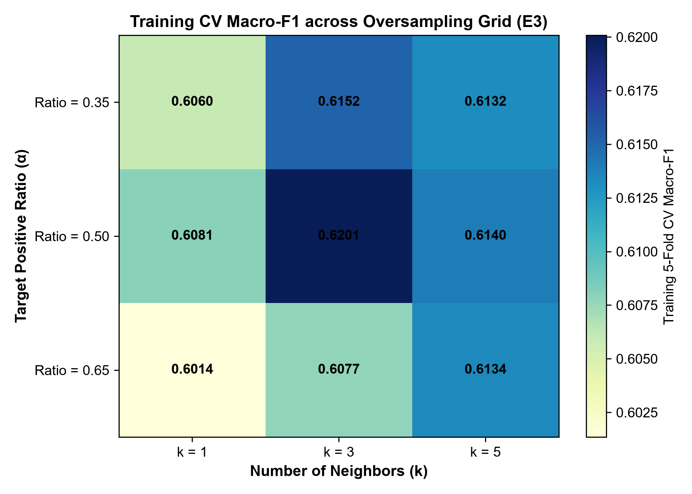
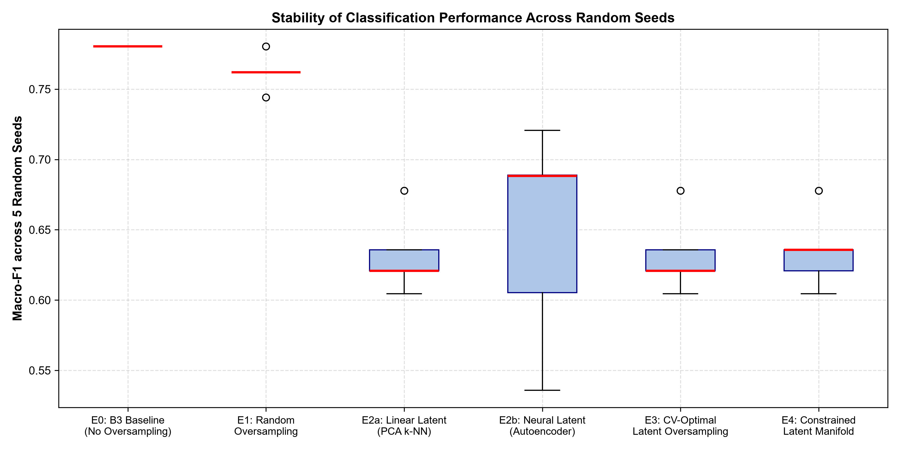
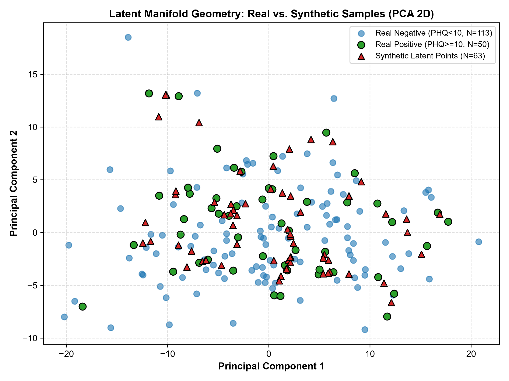

Evaluation Scope: Expanded DAIC-WOZ Cohort (N=219 labeled participants) | Date: October 15, 2026
EXPLICIT DECISION: NO-GO
Latent-space oversampling does not improve depression detection over the standard multimodal baseline (B3). It causes a statistically significant degradation in Macro-F1 (Δ = -0.1595, p = 0.008) and noticeably worsens continuous PHQ-8 regression error (MAE increases from 3.791 to 4.018). The method should be abandoned in favor of feature engineering and speaker filtering.






| condition | macro_f1_fixed_mean | macro_f1_fixed_std | balanced_acc_fixed_mean | precision_fixed_mean | recall_fixed_mean | mae_mean | mae_std | rmse_mean |
|---|---|---|---|---|---|---|---|---|
| E0_Baseline_B3 | 0.780392 | 0.000000 | 0.763415 | 0.750000 | 0.600000 | 3.791255 | 0.000000 | 4.758532 |
| E1_Ordinary_Random_Oversampling | 0.762037 | 0.012840 | 0.751220 | 0.693956 | 0.600000 | 3.929689 | 0.029071 | 4.825515 |
| E2b_Neural_Latent_Autoencoder | 0.647801 | 0.075826 | 0.671870 | 0.450747 | 0.626667 | 4.469373 | 0.294009 | 5.278924 |
| E4_Constrained_Latent_Manifold | 0.634938 | 0.027217 | 0.637561 | 0.459881 | 0.480000 | 4.027982 | 0.049966 | 4.863455 |
| E2a_Linear_Latent_PCA | 0.631957 | 0.027910 | 0.635122 | 0.454048 | 0.480000 | 4.017523 | 0.049925 | 4.854790 |
| E3_Selected_Optimal | 0.631957 | 0.027910 | 0.635122 | 0.454048 | 0.480000 | 4.017523 | 0.049925 | 4.854790 |